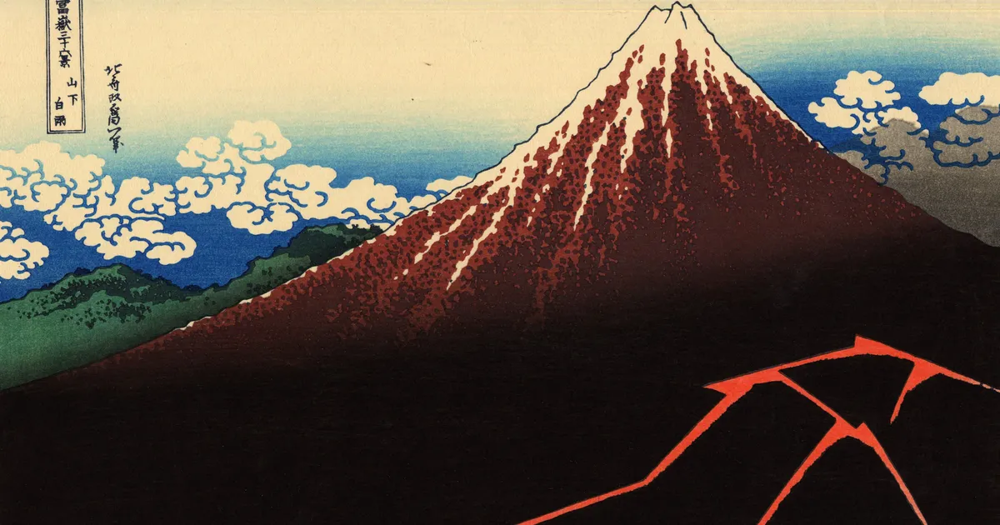

SEKAICTF 2026: 3in1
A full-chain SEKAICTF 2026 challenge covering Ladybird, a QEMU LPE, and a QEMU escape.

With a clear decline in competitiveness across the board for CTFs now that AI has taken over, we decided to make some harder challenges for this last year. And so I’ve created two challenges for SEKAICTF this year starting with a full chain, combining two 0days and a new way to exploit an n-day with fewer primitives than previous researchers from ottersec.
Components
- Ladybird
- QEMU LPE
- QEMU escape